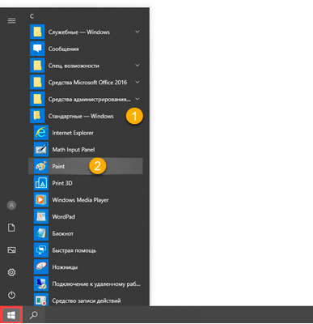
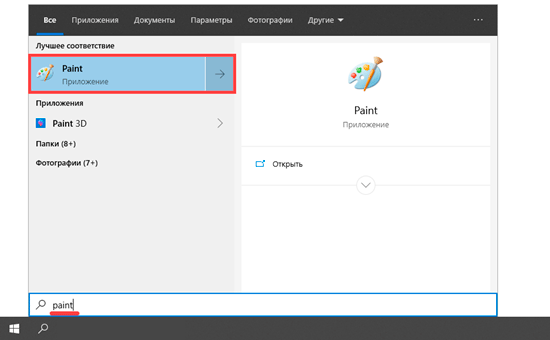
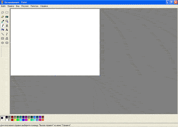
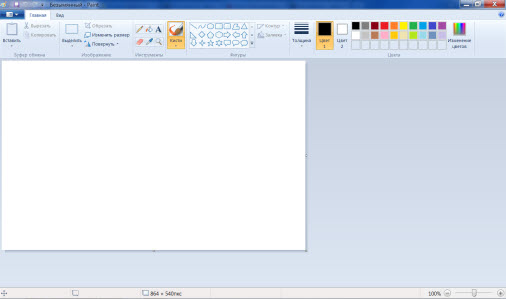
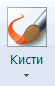
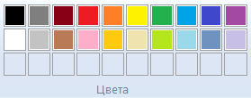

Программа для рисования
Paint - очень простой растровый графический редактор, предназначенный даже не для рисования, а для лёгкой правки картинок (добавить надпись, стрелочку, вырезать один кусочек картинки и вставить в другую, сохранить сделанный скриншот ...).
По своим возможностям Paint не соответствует современным требованиям, но в силу простоты и доступности остаётся необходимым компонентом операционной системы. Не разобравшись с принципами упражнения этой программой, трудно осваивать другие, более мощные средства работы с графикой./p>
Как открыть
Находится эта программа в Пуск, в разделе «Стандартные — Windows».
Если найти не получается, откройте Пуск и прямо в открытом окне напечатайте paint.
Или нажмите на клавиатуре комбинацию клавиш Win + R, вставьте в окошко mspaint и нажмите Enter:
Как выглядит
Есть две версии Paint. По большему счету, они отличаются только дизайном.
Вот так выглядит версия 2003 года:
А так — современная версия (2007-2020):
Как рисовать
Попробуем что-нибудь нарисовать. Щелкните левой кнопкой мышки по инструменту в верхнем меню. Например, по кисточке.
Теперь щелкните по нужному цвету.
Наведите курсор на белую часть, нажмите левую кнопку мыши и, не отпуская ее, двигайте мышкой.
Вот что получилось у меня: